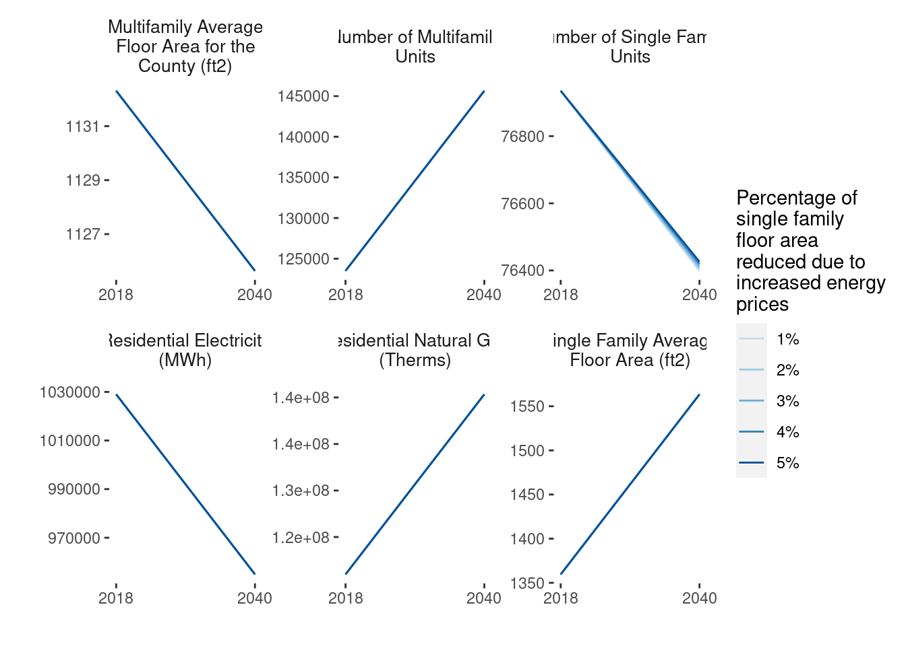
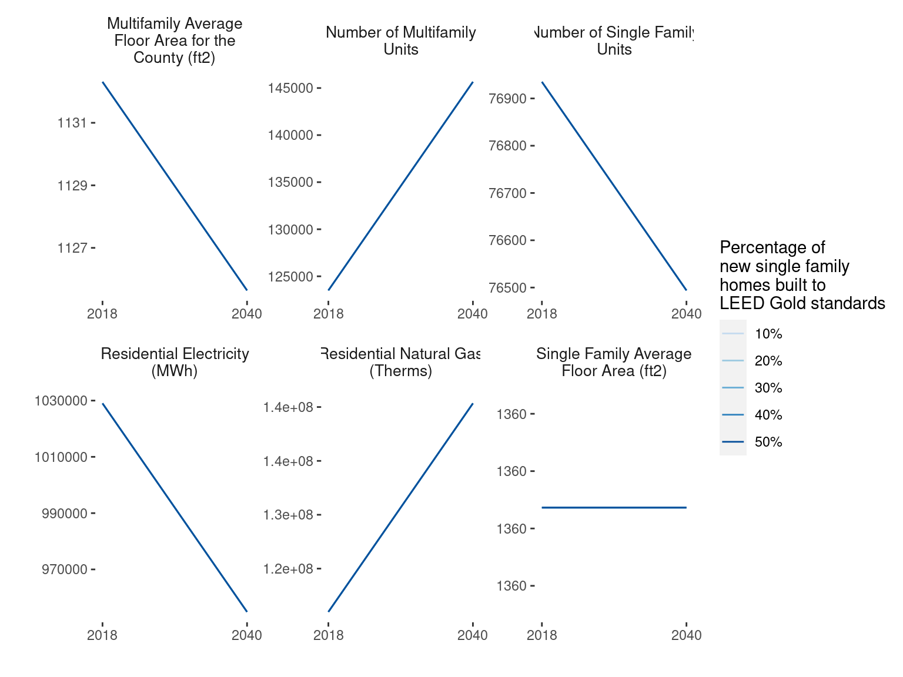
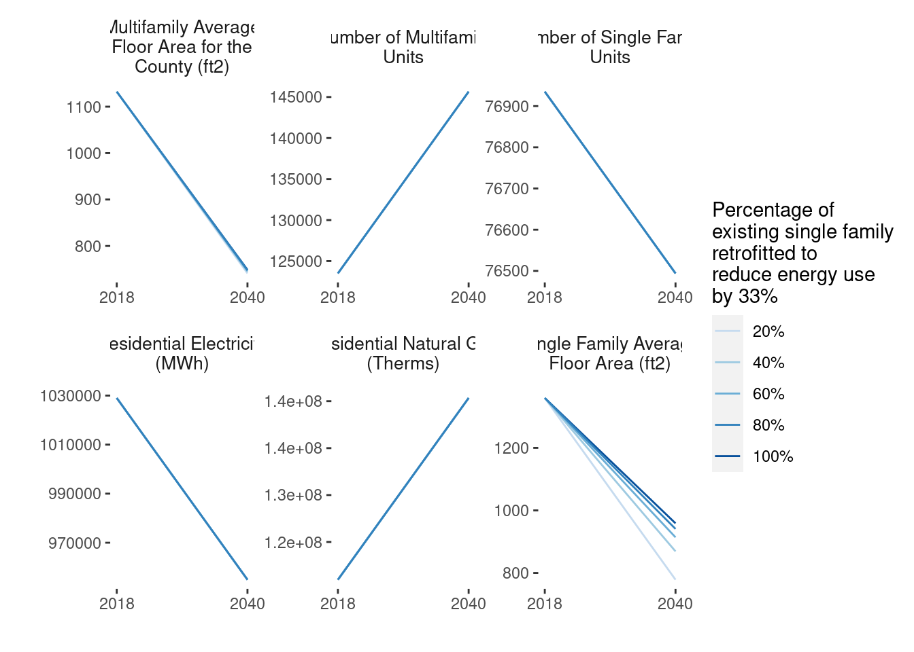
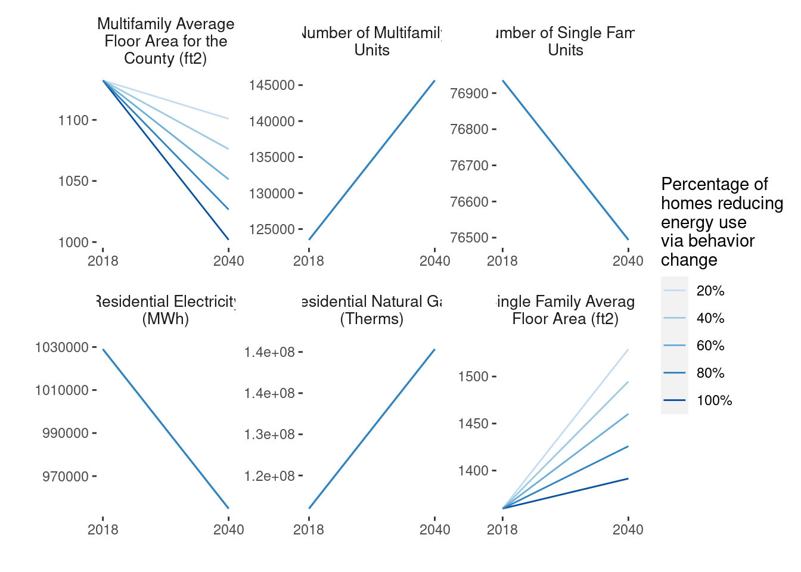
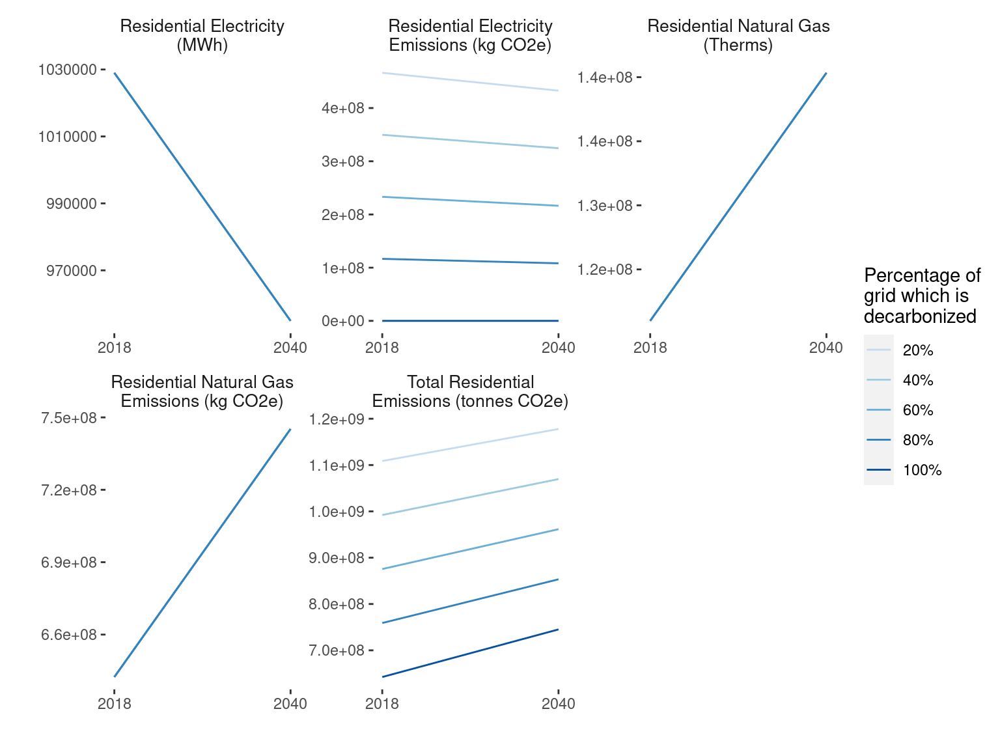
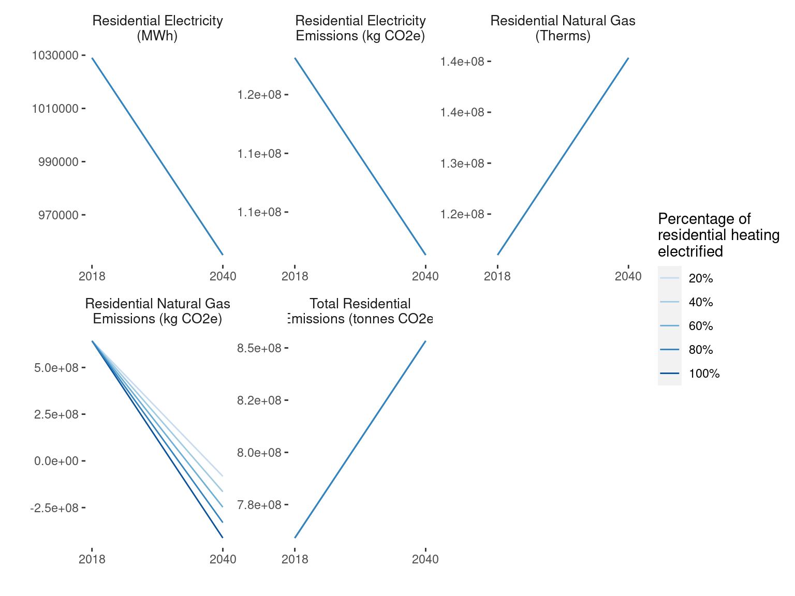

Greenhouse Gas Emissions Scenario Planning
January 2023
1 Building Energy

There are several strategies that can be employed to reduce emissions in the building energy sector, including improving efficiency, transitioning to low-carbon electricity sources, electrifying heating systems, adopting sustainable construction practices, and changing behaviors to use energy more efficiently.
1.1 Framework
The global energy consumption of buildings, both residential and commercial, has steadily increased and now accounts for between 20-40% of energy consumption in developed countries (Pérez-Lombard, Ortiz, and Pout 2008).
What predicts greenhouse gas emissions in the building sector?
To predict the future greenhouse gas emissions of the building energy sector, we must consider two important factors:
Residential energy consumption is directly proportional to the floor area of homes. In other words, larger homes consume more energy. Strategies to reduce the floor area or increase the energy efficiency per unit area of residential buildings have the potential to decrease emissions. However, it is important to note that there are other factors that also contribute to residential energy consumption, such as the type of appliances and systems used, the number of occupants, and the location and climate of the home.
Energy consumption in the non-residential sector is correlated to the number of jobs in the industrial and commercial sectors in a community. Strategies that reduce the energy intensity per worker have the potential to decrease greenhouse gas emissions by increasing energy efficiency. However, it is important to note that there are other factors that also contribute to non-residential energy consumption, such as the type of building, the usage pattern, and the location and climate.
Greenhouse gas emissions in the building sector are directly caused by energy consumption. To reduce these emissions, we can decarbonize the electricity grid and reduce the carbon footprint of natural gas used for heating.
What is the status of the electricity grid
When it comes to reducing emissions in the building sector, the electricity grid, and the percent that it is supplied by renewable sources plays a major role.
Electricity in Minneapolis is served by Xcel Energy. In their report Building a Carbon Free Future in 2019, the utility states their goal to provide carbon-free electricity to all of its customers by 2050. The company aims to reduce carbon emissions by 80% by 2030 as an interim goal.
1.2 Residential Energy Assumptions
The biggest share of residential electricity use is typically for heating and cooling. In the United States, heating and air conditioning account for about half of the average home’s energy use. Therefore, for the residential sector, electricity and natural gas used tend to be closely correlated with the square footage of a building.
A 2020 study found that the average US home consumed 147 kilowatt-hours per square meter (kwh/m^2) in 2015, and the average emissions of greenhouse gas intensity was 45 kg of CO2-equivalents per square meter. The same study found that climate and, to a lesser degree, building age are positively correlated with energy intensity, while energy infrastructure strongly influences greenhouse gas intensity. The study also predicts that states with newer housing stocks would use less energy due to ongoing adoption of residential energy codes (Goldstein, Gounaridis, and Newell 2020). 147 kilowatt-hours per square meter converted to squared feet is 13.65 kilowatt hours per square feet. The reasons for Minnesota cities to have lower electricity consumption could be due to less use of electricity for air conditioning compared to warmer areas in the country. However, the natural gas consumption of the average Minnesota household is higher than in most states.
Table 1.1 shows the basic assumptions about electricity and natural gas use for the baseline year of 2018 and forecast year of 2040.
The residential energy forecast is a prediction of the energy consumption of the city in the year 2040. It is produced by taking the demographic forecast (discussed in section 2.2), which is a projection of the population size, and an extrapolating the historical floor area growth rate for the last ten years (based on 2018).
The floor area growth rate is the rate at which the total floor area of buildings in a given area is increasing over time. It is calculated by dividing the change in floor area from one year to the next by the initial floor area. For example, if the floor area of a residential area increased by 10% from one year to the next, the floor area growth rate would be 10%.
| Variables | 2018 | 2040 |
|---|---|---|
| Residential Electricity (MWh) | 1,029,006 | 954,909 |
| Residential Electricity Emissions (tonnes CO2e) | 378,435 | |
| Residential Natural Gas (Therms) | 120,984,119 | 140,340,271 |
| Residential Natural Gas Emissions (tonnes CO2e) | 643,172 | |
| Residential Electricity per Floor Area (KWh/ft2) | 4.20961 | 3.36769 |
| Residential Therms per Floor Area (therms/ft2) | 0.494939 | 0.494939 |
| Residential Electricity per Household (MWh/household) | 5.63163 | |
| Residential Therms per Household (therms/household) | 662.132 |
1.2.1 Residential Energy Strategies
1.2.1.1 Reducing Residential Floor Area and Improving Efficiency
Energy consumption is directly correlated to the floor area of a residential unit. In general, bigger homes consume more energy. Therefore, we have calculated the impact of different strategies that directly alter the size of homes.
The Minneapolis 2040 Comprehensive Plan aimed to increase housing supply and address affordability and segregation issues by eliminating single-family zoning and allowing up to three units per property. Currently the plan is facing criticism and legal challenges, including a recent court decision halting enforcement of the plan on environmental grounds. Despite this, single family zoning remains a significant strategy to consider in how the city could meet its ambitious climate goals.
Cities have a range of tools at their disposal to control the size of new single family homes and to encourage the construction of smaller, more efficient homes.
The City of Minneapolis can influence the size of new single family homes in a variety of ways, including:
Design guidelines Cities can adopt or develop design guidelines that specify the size and appearance of new single family homes. These guidelines can be used to encourage the construction of smaller homes. There are several different energy efficiency building design standards, such as Passive House standards, which consume less than 18 of kilo BTUs, as well as new LEED performance-based energy efficiency standards and others. Minnesota’s B3 Buildings Benchmarking project offers a long-term approach to benchmark increases in energy efficiency of existing and new buildings per square foot.
Zoning regulations The City of Minneapolis has a range of residential zoning categories, including single-family, multifamily, and mixed-use zones, which are designed to accommodate different types of housing and land uses. A city can use zoning regulations to specify the size of new single family homes. For example, the city might require that new single family homes have a minimum or maximum square footage, or that they be a certain percentage of the size of the lot on which they are built.
Incentives a city can offer incentives to encourage the construction of smaller single family homes. For example, a city might offer reduced permit fees or other financial incentives to builders who construct homes that meet certain size requirements.
Fees Cities can impose impact fees on new construction in order to offset the costs of providing infrastructure and other services. Impact fees can be used to discourage the construction of larger homes by imposing higher fees on larger homes.
1.2.1.2 Promote Affordable Floor Area
If the availability of fossil fuel sources such as oil, natural gas, and coal is limited, energy prices may increase as demand outstrips supply. New single-family homeowners may respond to increased energy prices by decreasing their living space in order to save on energy costs. This could involve reducing the size of the home or making other changes to the layout or design of the home to make it more energy efficient.
About this strategy Our assumption is that cities can control (or at least influence) the size of new single-family homes to reduce energy use and increasing affordability. For this strategy, the growth of the single-family home size is reduced from 15% to 5%to make the new single-family home smaller. We apply this impact to 50% of new single-family homes. Cities can adjust the growth rate of single-family homes’ floor area and the percentage of new single-family homes being controlled.
\[\begin{equation} sqft_{2040}^{sf} = (units_{2040}^{sf} -units_{2018}^{sf}) * 0.5 * \left(\bar{sqft}_{2040}^{sf}-(1+X) * \bar{sqft}_{2018}\right) (\#eq:sqft_units_2040) \end{equation}\]
where
- \((1+X)\): The rate of growth in single-family floor area in square feet per year.
- \(sqft_{2040}^{sf}\): The total floor area of single-family homes in the community in 2040. \(units_{2040}^{sf}\): The number of single-family housing units in the community in 2040.
- \(units_{2018}^{sf}\): The number of single-family housing units in the community in 2018.
- \(0.5\): This factor represents the assumption that half of the population will reduce the living space of new single-family homes in response to doubling energy prices.
- \(\bar{sqft}_{2040}^{sf}\): The average floor area of single-family homes in the community in 2040.
- \(\bar{sqft}_{2018}\): The average floor area of single-family homes in the community in 2018.
| Variables | 2018 | 2040 |
|---|---|---|
| Number of Single Family Units | 76,935.00 | 76,426.02 |
| Number of Multifamily Units | 123,504.00 | 145,653.00 |
| Single Family Average Floor Area (ft2) | 1,359.56 | 1,563.49 |
| Multifamily Average Floor Area for the County (ft2) | 1,132.31 | 1,125.64 |
Figure ?? could be a static or interactive figure. However, there do appear to be some questions about the parameters/results? The biggest issue is that I can’t get the run_scenario_building() function to run without errors? Because I think(?) that is really the key function that we need to run here. It is a bit unclear to me why the table (above) is not coming from running that larger run_scenario_building function, but instead coming from the the calc_affordable_floor_area() function. The plot below is made with the calc_affordable_floor_area function. Other, smaller issues are: 1) The box above suggest that the floor area can be reduced by 15%, but running the equation produces an error where “Warning: Single family floor area growth cannot be greater than %5”. This is why you see only small floor area reductions in the figure. 2) It seems like the electricity/gas use is more influenced by year rather than reductions in floor area…for the purpose of the report, should this strategy be replaced with one that has a bigger impact on energy use? 3) It is unclear why the number of single family units decreases - the strategy description suggests that only floor area should decrease - is this a naming typo?

1.2.1.3 Promote New Homes Energy Efficiency
LEED (Leadership in Energy and Environmental Design) is a green building rating system that is used to evaluate the sustainability of buildings. Buildings that meet LEED standards are designed and constructed to be energy efficient and to use fewer natural resources.
The amount of energy savings that can be achieved through LEED certifications will depend on the specific design and construction practices that are used, as well as the location and climate of the building. According to the U.S. Green Building Council, buildings that are designed to meet LEED Gold standards typically achieve energy savings of around 25% compared to conventional buildings.
The Greenhouse Gas Scenario Planning Tool uses LEED Gold for residential buildings as an example of how building standard could reduce energy use and therefore carbon emissions.
About this strategy Our main assumption is that cities can adjust the percentage of new homes achieving a standard like LEED. Cities can adopt strict building codes requiring new homes to achieve LEED Gold (or similar) standards. We assumed 50% of new homes (single and multifamily homes) to be LEED-Gold with both electricity and gas energy use intensity reduced 64%. Existing home: 80% reduced EUI by 33%.
| Variables | Value |
|---|---|
| Number of Single Family Units | 76,494.00 |
| Number of Multifamily Units | 145,653.00 |
| Multifamily Average Floor Area for the County (ft2) | 1,125.64 |
| Single Family Average Floor Area (ft2) | 1,359.56 |
\[sqft_{2040}^{sf} = X * (units_{2040}^{sf}-units_{2018}^{sf}) * \bar{sqft}_{2040}^{sf}) * 0.64 \text{, where } 0 \le X_1 \le 1\]
- \(X\): The percentage of new homes that are LEED Gold.
- \(sqft_{2040}^{sf}\): The total floor area of single-family homes in the community in 2040.
- \(units_{2040}^{sf}\): The number of single-family housing units in the community in 2040.
- \(units_{2018}^{sf}\): The number of single-family housing units in the community in 2018.
- \(\bar{sqft}_{2040}^{sf}\): The average floor area of single-family homes in the community in 2040.
- \(0.64\): This factor represents the reduction in energy use intensity due to highly-efficient LEED Gold construction.
Figure 1.1 could be a static or interactive figure. Same questions/issues as above; the main one being is that the larger run_scenario_building() function has errors and isn’t running right now.
seq(0.1, 0.5, .1) %>%
purrr::set_names() %>%
purrr::map(~ghg.sp::calc_floor_area_leed(
res_tb = building_data$residential,
.new_homes_leed_gold_pct = .x,
.enviro_factors = enviro_factors
)) %>%
bind_rows(.id = "level")%>%
filter(
ctu_name == params$ctu_selection,
var %in% c(
"multifamily_average_floor_area_sqft_county",
"multifamily_units",
"single_family_units",
"single_family_average_floor_area_sqft_ctu",
"residential_mwh",
"residential_therms"
)) %>%
left_join(., variables, by = "var") %>%
mutate(desc = str_replace_all(desc, "ft<sup>2</sup>", "ft2")) %>%
rename("Variables" = desc) %>%#,
# "2040" = value)
mutate(level = paste0(as.numeric(level) * 100, "%")) %>%
ggplot(aes(x = year, y = value, color = level)) +
geom_line() +
facet_wrap(~Variables, scales = "free", labeller = label_wrap_gen(width = 25)) +
scale_x_continuous(breaks = c(2018, 2040)) +
scale_color_manual(values = RColorBrewer::brewer.pal(6, "Blues")[2:6]) +
labs(x = "", y = "", color = "Percentage of\nnew single family\nhomes built to\nLEED Gold standards") +
theme(
panel.background = element_rect(fill = "white"),
panel.grid = element_blank(),
axis.title = element_text(size = 14),
strip.background = element_rect(fill = "white"),
strip.text = element_text(size = 10)
)
Figure 1.1: Comparing output values between years 2018 and 2040 for different percentages of new single family homes built according to LEED Gold standards.
1.2.1.4 Increase Existing Homes Energy Efficiency
There are multiple ways in which a city, like Minneapolis, can promote the retrofit of existing homes to gain energy efficiency. Some examples include:
Develop education and outreach programs Cities can develop education and outreach programs to inform homeowners about the benefits of energy-efficient home retrofits and how to access available resources and incentives. According to the Center for Energy and Environment (CEEE) the Energy Disclosure Program in Minneapolis aims to increase consumer awareness of energy performance in single-family homes in order to encourage the adoption of energy efficiency improvements. The program has been in place since January 2020 and is a part of the city’s Truth in Sale of Housing (TISH) pre-sale inspection process. It involves gathering data on key energy efficiency attributes such as insulation and heating equipment, and communicating the results to home sellers and buyers in an Energy Disclosure Report. The program is being implemented in partnership with the Center for Energy and Environment and CenterPoint Energy, and this report summarizes findings from the first 30 months of programming.
Offer financial incentives Cities can offer financial incentives, such as rebates or low-interest loans, to encourage homeowners to invest in energy-efficient home retrofits. The City of Minneapolis, offers incentives and rebates for homeowners for replacing less efficient equipment.
Establish building codes and regulations Cities can establish building codes and regulations that require or encourage energy-efficient retrofits in new construction and renovations.
Implement energy audits Minneapolis residents might be eligible for program such as the Home Energy Squads which free visits by energy auditors to income qualifying households. Cities can offer energy audits to help homeowners identify areas where their homes are losing energy and recommend cost-effective retrofits.
Partner with local organizations Cities can partner with local organizations, such as non-profits or utility companies, to offer resources and assistance to homeowners interested in energy-efficient retrofits.
About this strategy Cities can retrofit existing homes to be energy efficient. We assume 80% of existing homes with energy use intensity reduced by 33%. Cities can adjust the percentage of existing homes to be retrofitted.
| Variables | Value |
|---|---|
| Number of Single Family Units | 76,494.00 |
| Number of Multifamily Units | 145,653.00 |
| Single Family Average Floor Area (ft2) | 940.78 |
| Multifamily Average Floor Area for the County (ft2) | 747.67 |
\[sqft_{2040}^{sf+mf} = (units_{2018}^{sf} * X * 0.33 * \bar{sqft}_{2018}^{sf} + units_{2018}^{mf} * X * 0.33 * \bar{sqft}_{2018}^{mf})\]
- \(0.33\): Percent reduction in energy use intensity due to efficiency gains of the retrofitting.
- \(X\): The percentage of existing homes to be retrofitted. This value can be adjusted by the user and is defaulted to 80%.
- \(units_{2040}^{sf}\): Number of single-family housing units in 2018.
- \(units_{2018}^{mf}\): The number of multi-family homes in 2018.
- \(\bar{sqft}_{2018}^{sf}\): The 2018 average floor area of single-family homes.
- \(\bar{sqft}_{2018}^{mf}\): The average floor area of multi-family homes in 2018.
Figure ?? could be a static or interactive figure. Same questions/issues as above; the main one being is that the larger run_scenario_building() function has errors and isn’t running right now.

1.2.1.5 Promote Behavior Change for Residential Energy Efficiency
implementing efficient messaging, in-home energy displays, and smart meters can be an effective way to reduce household energy use, but the actual impact may depend on the specific circumstances of each city and the participation rate of households in these actions.
About this strategy Efficient messaging, in-home energy display, and smart meters together can reduce household energy use by 11%. The default is 100% of homes change behaviors due to these actions. Cities can adjust this participation rate accordingly.
| Variables | Value |
|---|---|
| Number of Single Family Units | 76,494.00 |
| Number of Multifamily Units | 145,653.00 |
| Single Family Average Floor Area (ft2) | 1,391.51 |
| Multifamily Average Floor Area for the County (ft2) | 1,001.82 |
\[ sqft_{2040}^{sf+mf} = X * population_{2040} * sqft_{2040}^{sf + mf }/population_{2040} * 0.11 \]
- \(0.11\): The percentage reduction in household energy use as a result of smart nudges.
- \(X\): The percentage of homes that change their behavior for energy efficiency.
- \(population_{2040}\): The total population in 2040.
- \(sqft_{2040}^{sf+mf}/population_{2040}\): The average square footage per person in 2040 for residential buildings.
Figure ?? could be a static or interactive figure. Same questions/issues as above; the main one being is that the larger run_scenario_building() function has errors and isn’t running right now.

1.2.1.6 Decarbonize Residential Energy Use
The energy grid could become cleaner by increasing the use of renewable energy sources such as solar, wind, and hydroelectric power, which produce significantly fewer greenhouse gas emissions than fossil fuels
About this strategy: Due to decarbonizing the grid, the emission factor of electricity decreases from 568 kg2e/MWh (2018 Minnesota state level) to 113 kgCO2e/MWh. This change is fixed by the grid.
| Variables | Value |
|---|---|
| Residential Electricity (MWh) | 954,909 |
| Residential Electricity Emissions (kg CO2e) | 108,172,078 |
| Residential Natural Gas (Therms) | 140,340,271 |
| Residential Natural Gas Emissions (kg CO2e) | 745,206,837 |
\[ kgCO_2e = (population_{2040} * sqft/person_{2040}^{residential} * kWh/sqft_{residential}^{2040}) \]
Figure 1.2 could be a static or interactive figure. Same questions/issues as above; the main one being is that the larger run_scenario_building() function has errors and isn’t running right now.
seq(0.2, 1, .2) %>%
purrr::set_names() %>%
purrr::map(~ghg.sp::calc_ghg_residential(
res_tb = building_energy_bau_data$residential,
res_tb_bau = building_energy_bau_data$residential,
.grid_decarbonization_pct = .x,
.enviro_factors = enviro_factors
)) %>%
bind_rows(.id = "level")%>%
filter(
ctu_name == params$ctu_selection,
scen == "scen",
var %in% c(
"residential_mwh",
"residential_electricity_emissions_kg_co",
"residential_therms",
"residential_natural_gas_emissions_kg_co",
"total_residential_emissions"
)) %>%
left_join(., variables, by = "var") %>%
mutate(desc = str_replace_all(desc, "<sub>2</sub>", "2")) %>%
rename("Variables" = desc) %>%#,
# "2040" = value)
mutate(level = paste0(as.numeric(level) * 100, "%")) %>%
ggplot(aes(x = year, y = value, color = level)) +
geom_line() +
facet_wrap(~Variables, scales = "free", labeller = label_wrap_gen(width = 25)) +
scale_x_continuous(breaks = c(2018, 2040)) +
scale_color_manual(values = RColorBrewer::brewer.pal(6, "Blues")[2:6],
breaks = c("20%", "40%", "60%", "80%", "100%")) +
labs(x = "", y = "", color = "Percentage of\ngrid which is\ndecarbonized") +
theme(
panel.background = element_rect(fill = "white"),
panel.grid = element_blank(),
axis.title = element_text(size = 14),
strip.background = element_rect(fill = "white"),
strip.text = element_text(size = 10)
)
Figure 1.2: Comparing output values between years 2018 and 2040 for different percentages of decarbonizing the grid.
1.2.1.7 Electrifying Residential Heating
The Greenhouse Gas Scenario Planning Tool estimates that by 2040, Minnesota will decarbonize the overall grid to 80% relative to 2018 levels, consistent with Xcel Energy’s plans to achieve a net-zero power grid by 2050.
Switching to more efficient electric heat pumps and tank-less water heaters with a net zero-carbon future electric grid can significantly reduce emissions.
Only around 14% of homes in MN have adopted these new technologies.2 The scenario planning tool projects that by 2050, 59% of residential and commercial buildings will switch to electrically driven heat pumps,3 which can heat and cool homes while offering long-term cost savings. Furthermore, the scenario planning model utilizes efficiency of the heat pump derived from pilot tests in Minnesota,4 so the results are more realistic for our region. National studies indicate 100% adoption of electric heat pumps may be unlikely in cold areas, due to which we also model renewable natural gas for the remaining buildings, described in the following strategy.
Electricity can be generated from various sources, including renewable energy sources such as solar, wind, and hydroelectric power. Using electricity for heating, cooling, and other household energy needs can reduce greenhouse gas emissions compared to fossil fuels such as natural gas, propane, and oil.
About this strategy For this strategy, we made the assumption that by 2040 59% of homes are using air-source heat pumps and electric water heaters, instead of using gas for heating. Cities can adjust the percentage of homes participated in electrifying heating.
| Variables | Value |
|---|---|
| Population | 485,000 |
| Residential Electricity (MWh) | 954,909 |
| Residential Electricity Emissions (kg CO2e) | 108,172,078 |
| Residential Natural Gas (Therms) | 140,340,271 |
| Residential Natural Gas Emissions (kg CO2e) | -185,722,810 |
| Total Residential Emissions (tonnes CO2e) | 853,378,915 |
Figure 1.3 could be a static or interactive figure. Same questions/issues as above; the main one being is that the larger run_scenario_building() function has errors and isn’t running right now.
a <- seq(0.2, 1, .2) %>%
purrr::set_names() %>%
purrr::map(~ghg.sp::calc_electrify_residential_heating(
res_tb = calc_ghg_residential(
res_tb = building_energy_bau_data$residential,
res_tb_bau = building_energy_bau_data$residential,
.grid_decarbonization_pct = 0.8,
.enviro_factors = enviro_factors
),
.additional_electrified_residential_buildings_pct = .x,
.res_natural_gas_for_space_heating_pct = 0.71,
.res_natural_gas_for_water_heating_pct = 0.24,
.grid_decarbonization_pct = 0.80,
.enviro_factors = enviro_factors
)) %>%
bind_rows(.id = "level")%>%
filter(
ctu_name == params$ctu_selection,
scen == "scen",
var != "population") %>%
left_join(., variables, by = "var")# %>%
a %>% mutate(desc = str_replace_all(desc, "<sub>2</sub>", "2")) %>%
rename("Variables" = desc) %>%#,
# "2040" = value)
mutate(level = paste0(as.numeric(level) * 100, "%")) %>%
ggplot(aes(x = as.numeric(year), y = value, color = level, group = level)) +
geom_line() +
facet_wrap(~Variables, scales = "free", labeller = label_wrap_gen(width = 25)) +
scale_x_continuous(breaks = c(2018, 2040)) +
scale_color_manual(values = RColorBrewer::brewer.pal(6, "Blues")[2:6],
breaks = c("20%", "40%", "60%", "80%", "100%")) +
labs(x = "", y = "", color = "Percentage of\nresidential heating\nelectrified") +
theme(
panel.background = element_rect(fill = "white"),
panel.grid = element_blank(),
axis.title = element_text(size = 14),
strip.background = element_rect(fill = "white"),
strip.text = element_text(size = 10)
)
Figure 1.3: Comparing output values between years 2018 and 2040 for different percentages of electrififying residential buildings. Grid decarbonization is held constant at 80%, natural gas for space heating held at 71% and natural gas for water heating at 24% (the constants are the same as in the above table).
1.3 Non-Residential Energy Assumptions
Non-residential energy use refers to the energy consumption of commercial and industrial buildings, including both electricity and natural gas. This energy use is estimated by considering the size of the commercial and industrial buildings, as well as the number of people who are expected to work in these buildings.
In addition to electricity and natural gas, non-residential energy use may also include other energy sources such as propane, fuel oil, and renewable energy sources. Accurate estimates of non-residential energy use can help Minneapolis make informed decisions about energy efficiency and conservation efforts.
Table 1.8 shows the baseline and forecast assumptions for non-residential electricity and natural gas use for Minneapolis.
| Variables | 2018 | 2040 |
|---|---|---|
| Commercial Natural Gas (Therms) | 187,242,459.50 | 213,077,984.61 |
| Industrial Natural Gas (Therms) | 26,082,036.88 | 43,953,039.29 |
| Commercial Electricity (MWh) | 1,580,539.69 | 1,798,620.96 |
| Industrial Electricity (MWh) | 1,254,092.31 | 2,113,376.69 |
| Commercial Natural Gas per Worker (therms/worker) | 729.38 | 729.38 |
| Industrial Natural Gas per Worker (therms/worker) | 617.09 | 617.09 |
| Commercial Electricity per Worker (MWh/worker) | 6.16 | 6.16 |
| Industrial Electricity per Worker (MWh/worker) | 29.67 | 29.67 |
1.3.1 Non-Residential Energy Strategies
Some existing programs include:
Conservation Improvement Programs
The Conservation Improvement Program (CIP) is a policy in Minnesota that aims to improve energy efficiency and conservation in households and businesses. It is funded by ratepayers and administered by over 180 electric and natural gas utilities, with oversight from the Minnesota Department of Commerce, Division of Energy Resources (DER). Implementors of CIP include the Center for Energy and Environment (CEE) and Home Energy Squad.
CIP promotes energy-efficient technologies and practices to residential, commercial, and industrial customers through various programs, such as energy audits, rebates on high-efficiency appliances, LED lighting, and air-conditioning cycling programs. The requirements for investor-owned utilities (IOUs) and consumer-owned utilities (COUs) are different, with more stringent requirements for IOUs due to their status as natural monopolies. According to the American Council for an Energy-Efficient Economy’s 2022 State Energy Efficiency Scorecard, Minnesota’s electric efficiency program spending in 2021 was $174 million, with net incremental electricity savings of 955 thousand MWh, and natural gas efficiency program spending was $71 million, with net incremental natural gas and delivered fuel savings of 3.3 million MMBtu. Fresh Energy, a non-profit organization, has been actively involved in the development and implementation of CIP, including advocating for improvements to cost-effectiveness tests and working to advance equity in energy efficiency programs.
The Eco Act
The Energy Conservation and Optimization Act of 2021 (ECO Act) in Minnesota aims to strengthen the state’s energy conservation programs, reduce greenhouse gas emissions, and create local jobs through energy efficiency projects in homes and businesses. The ECO Act updates and expands the Conservation Improvement Program (CIP), which helps households and businesses use electricity and natural gas more efficiently and reduces the need for new utility infrastructure. The ECO Act expands eligibility for low-income households, requires energy efficiency improvements for public schools, increases conservation goals for investor-owned utilities, and provides additional flexibility for cooperatives in meeting their conservation requirements. The ECO Act is expected to create local jobs through electrical, heating and cooling, ventilation, and insulation installation projects across the state.
SB2030
The Minnesota SB2030 program is focused on reducing emissions in commercial, industrial, and institutional buildings. The goal is to reduce energy use and decrease carbon dioxide emissions. To do this, the program sets standards for energy efficiency and renewable energy for new and renovated buildings. These standards are based on the amount of energy a building uses per square foot and will become more strict over time. Buildings starting construction between 2010 and 2015 need to reduce their energy use by 60% compared to an average building in 2003, while those starting construction between 2025 and 2030 need to reduce it by 90%. These energy efficiency standards will be updated every three to five years to make sure they are effective and cost-effective. The program also considers the impact of electric vehicle charging infrastructure on a building’s energy use.
1.3.1.1 Electrify Non-Residential Heating
## Warning: Expected 3 pieces. Missing pieces filled with `NA` in 372 rows [65, 66,
## 131, 132, 197, 198, 263, 264, 329, 330, 395, 396, 461, 462, 527, 528, 593, 594,
## 659, 660, ...].| Variables | 2040 |
|---|---|
| Commercial Electricity per Worker (MWh/worker) | 6.16000e+00 |
| Industrial Electricity per Worker (MWh/worker) | 2.96700e+01 |
| Commercial Electricity (MWh) | 1.48251e+06 |
| Industrial Electricity (MWh) | 2.11338e+06 |
| Commercial Natural Gas (Therms) | 1.75629e+08 |
| Industrial Natural Gas (Therms) | 4.39530e+07 |
| Total Industrial Emissions (tonnes CO2e) | 1.16598e+09 |